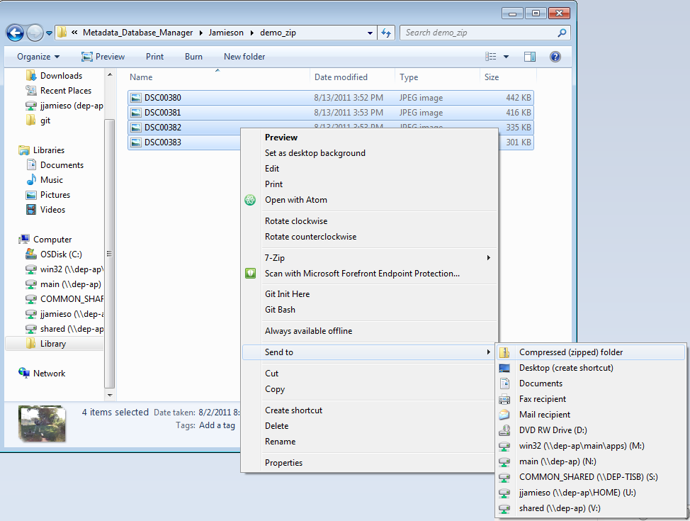

XML Metadata Generator - Help
The XML Generator can be used to easily create XML documents for the National Digital Catalog for the USGS.Any field that is bold is required to generate the XML file(s). You do NOT need to upload a .zip file to use the tool. If you do not upload any .zip you will generate a single XML file.
Reasons for using a .zip:
- Many items from the same location
- Many items with the same description but different titles
- Multiple copies of an item from different angles/viewpoints
Assuming you are using a .zip file:
- Begin by collecting the files you want to generate metadata for. Select them all, right click and send them to a compressed(zipped) folder as demonstrated below.
- Click 'Browse...' or 'Choose File' depending on your browser. It is the first field option on the generator.
- Select the .zip file that you just created. The files inside will be shown with their titles pre-populated to their file names. You can change the titles at this time.
- The next field is the Collection ID. This can be changed manually or you can use the drop down for predefined IDs and the proper ID will be filled in for you.
- The following fields in bold are required to generate the files. Fill them out according to the NGGDPP PDF guide on metadata.
- If you forget what should go in any of the fields, hover over the '?' next to the field name to get a description of it and some example input.
- Dataset reference date will be automatically populated to today, but you are free to change it as long as it is in one of the allowed formats

By choosing to input a .zip file, you will get a .zip back out. When you click the generate button, you will get a .zip file containing XML files with the same name and -xml appended to the end of the file. You should inspect the XML files before submitting them to the USGS to ensure they are correct.
If your item does not fit one of these descriptions you probably want to generate a single XML file, in which case do not create any .zip files. Ignore the first field asking for the .zip file.
If you ARE NOT using a .zip file:
- Follow the same steps as above but do not select anything for the .zip file field.
- You will get a single 'Title' field which must be populated manually.
- You will get back a single XML file when you use this option